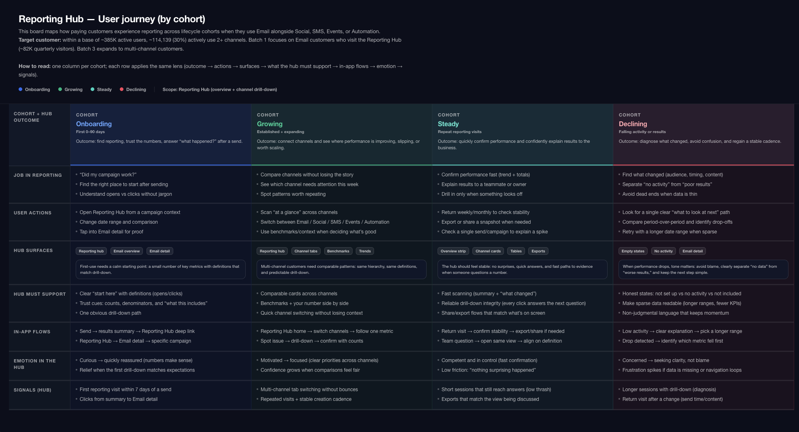
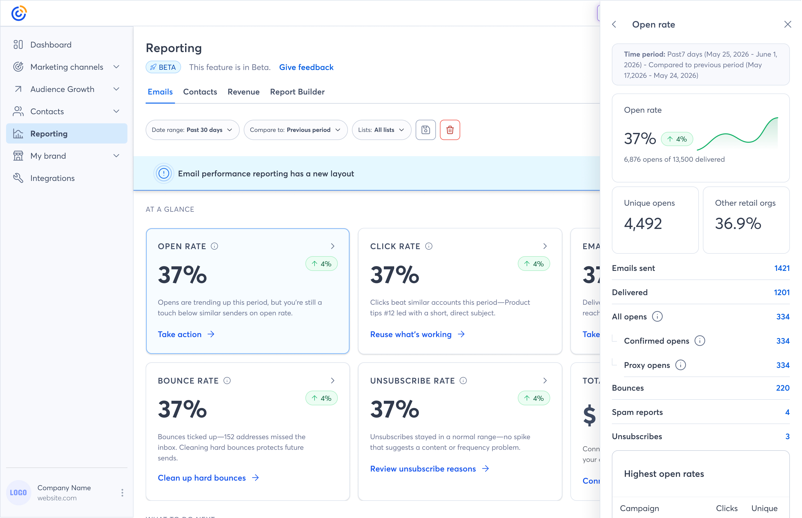
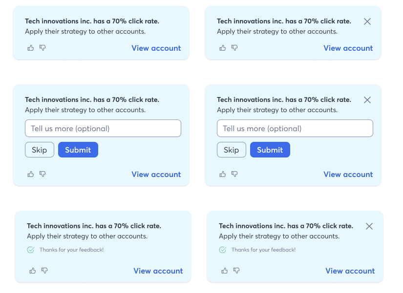
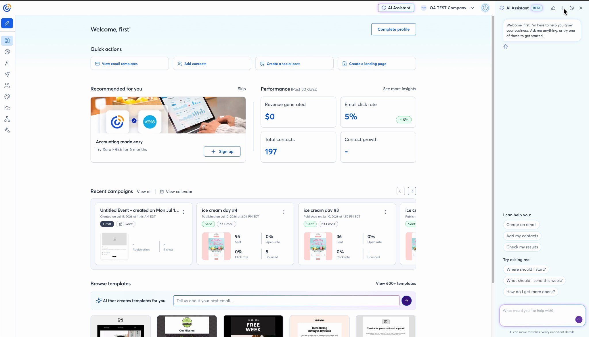
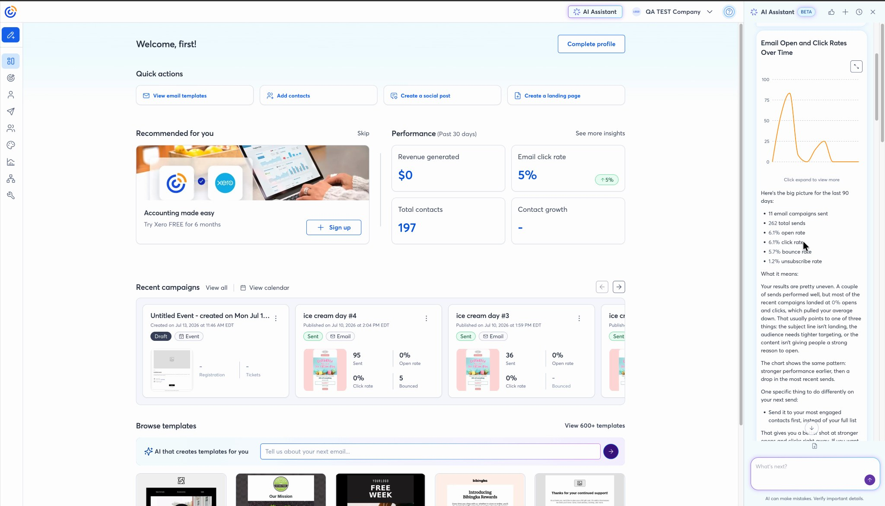
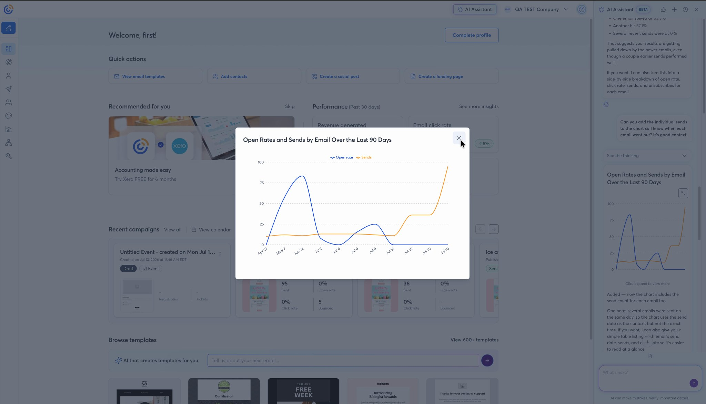
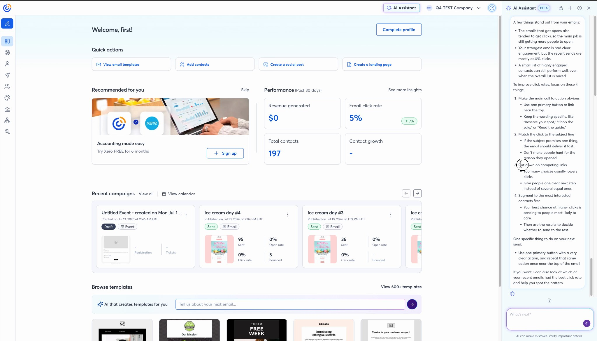

Overview
Reporting needed to support a decision.
Small business owners could see their campaign metrics in Constant Contact, but research showed that understanding a change—and deciding what to do about it—was still difficult.
I owned design for the AI experience in core product and reporting, partnering with the broader AI Assistant team. My scope connected the reporting interaction to reusable Summit patterns so the experience could be applied consistently across product surfaces.
I focused on a short sequence: explain the result, support a follow-up question, and connect the answer to a useful next step.
The Problem
A metric could tell someone what happened, but leave the next step unclear.
The reporting experience contained open rates, click rates, bounces, and other campaign measures. For people without an analytics background, the difficult task was interpreting those numbers in the context of their own business.
The design problem was to help someone move from “my click rate fell” to a question they could investigate and an action they could evaluate.

Research pointed to a need for explanations tied to the account and campaign, rather than another layer of general marketing advice.
My Role
Own the reporting experience and connect it to the broader assistant.
Multiple designers contributed to the AI Assistant initiative. I owned the UX and UI in core product and reporting, worked with data science and engineering on the insight experience, and brought the resulting patterns into Summit.
Key Workflows I Influenced
Meet the marketer at the point of interpretation.
I designed a dismissible campaign summary with relevant comparisons, an explanation people could expand, and a specific recommendation.
I explored recommendations within campaign creation and the homepage, with paths to the relevant action and states for limited account data.

Trust & User Control
Give the person a way to check the answer.
I used the same review model across the surfaces I owned: distinguish the source data from its interpretation, explain the recommendation, and let the person choose whether to continue.
The interaction rules covered the cases where an answer would be difficult to judge:
These states mattered as much as the successful response. An incomplete answer should be visible as incomplete, rather than polished into a confident recommendation.
Designing for Delegation
Separate advice from permission to act.
In reporting, asking for an explanation does not grant permission to change a campaign. I kept the recommendation and the action separate so someone could investigate before committing.
For each proposed action, I considered what the person needed to review, whether it could be undone, and how to return to the reporting context. That made control a property of the workflow rather than an extra confirmation added at the end.
Reporting & Plain-Language Insights
Make the data and its interpretation work together.
I partnered with data science and engineering on the relationship between campaign data and the generated summary. The interaction needed to support comparisons, missing-data states, and a useful amount of explanation without burying the recommendation.
The design work included:

Conversational Analytics in Practice
Follow one question through the reporting flow.
The sequence below shows the reporting interaction: enter through Check my results, review a summary, ask for a chart or table, and follow up with a question about improving click rates.

Start with a familiar task
The welcome state offered account-related starting points—Create an email, Add my contacts, and Check my results—so people did not have to invent a prompt before seeing what the assistant could help with.
Choosing Check my results opened a 90-day account summary. The first response needed to be useful on its own while leaving room for a more specific question.

Connect the evidence to the recommendation
I worked toward a response structure that connects the data, its interpretation, and a next step. Keeping those parts identifiable helps the person see what supports the recommendation.
The expandable explanation gave people more context without requiring every response to begin with a long technical account.

Keep context across follow-up questions
Missing information needed a visible treatment too. In the captured flow, a campaign name was left blank rather than guessed. The design principle was to preserve that uncertainty instead of disguising it.
The follow-up sequence moved from a chart to send counts, then a table of email names. That illustrates why the conversation needed to retain context across turns.

Move from interpretation to a next step
Each request changed the presentation of the same underlying question. The interaction needed to support that exploration without making the person start again.
The final question—how to improve click rates—shifted from reporting to advice. The recommendation needed to remain grounded in the account data the person had just reviewed.
That was the connection I wanted the experience to support: a marketer could understand the result, investigate it, and leave with a next step they had chosen.
Outcome & Impact
A reporting flow people could question.
The work connected entry points, account summaries, follow-up questions, and recommendations within a single reporting experience. It also defined reusable treatments for explanation, limited data, and user control.
The design contribution was the connection between these moments. A chart request or a missing campaign name was part of the experience to resolve, not an exception outside the design.
The next evaluation would need to follow the question through to a decision: could people reach a useful answer, choose a relevant action, and return when they had another question? Opening the assistant would not be enough to answer that.
This case covers my work at Constant Contact in 2026; verified post-rollout results are not available.
What’s Next
What I would evaluate next.
I would compare the reporting entry points, review the questions people ask after the first summary, and examine where they dismiss or abandon a recommendation. Those observations would help distinguish a content problem from a workflow problem.
Reflection & Key Learnings
The difficult work was in the handoffs.
This project connected several kinds of handoff: data to interpretation, interpretation to recommendation, and recommendation to action. Each could fail differently. A plausible summary was not enough if the user could not check it or understand the next step.
Working across product, data science, engineering, and the design system helped me keep those transitions visible. The shared patterns were useful because they carried the interaction rules—not only the visual treatment—into other surfaces.